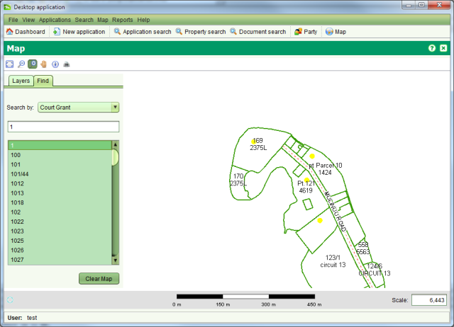

You can use the Find tab to perform spatial searches to quickly locate parcels or other geospatial features in the map. To use the Find, select the type of geospatial feature to search in the Search By drop down and start typing in the field provided. Once you have entered enough characters (between 1 and 3), the search will begin listing values that match the search criteria. To view one of the results, double click the result value in the result list and the map will zoom to the location of the selected feature and highlight it.

SOLA Map Viewer Find Court Grant
To remove the highlight from your selected feature on the map, click the Clear Map button.
The spatial searches available in SOLA Samoa are
|
Enter the Court Grant number to find the approximate location of a court grant. Requires at least 1 character to be entered. |
|
Enter the Flur number to locate the Flur area. Requires at least 1 character to be entered. |
|
Enter the Geodetic Mark number to locate the mark. Requires at least 1 character to be entered. |
|
Enter the appellation for a parcel (e.g. parcel/lot and/or plan number) to locate a parcel. This search will only work with parcels that have a spatial definition. Requires at least 3 characters to be entered. To locate a Unit Title Development, search for the underlying parcel. |
|
Enter the title / folio reference for a property to locate the parcel for the property. This search will only work if the property is linked to a parcel with a spatial definition. Requires at least 3 characters to be entered. |
|
Enter the name of a current property owner to locate a parcel for the property. This search will only work if the property is linked to a parcel with a spatial definition. Requires at least 3 characters to be entered. |
|
Enter the name of a road to locate the road parcel. Be aware that not all of the road parcels in SOLA have been assigned a name. Requires at least 3 characters to be entered. |
|
Enter a survey plan number or a SOLA application number to find the approximate location of the survey plan or SOLA application. Requires at least 2 characters to be entered. |
|
Enter the name of a village to find for the approximate location of a village. Requires at least 2 characters to be entered. |